ADK
ADK Gemini
Gemini Cloud Storage
Cloud Storage Google Developer GroupBangkok · DevFest 2026
Google Developer GroupBangkok · DevFest 2026
Agenda
- 01The context window problemWhy long sessions slow down and get expensive
- 02Context compactionSummarize older turns while keeping recent ones sharp
- 03Context cachingReuse static instructions, tools and docs across turns
- 04Artifacts managementStore versioned files outside session state
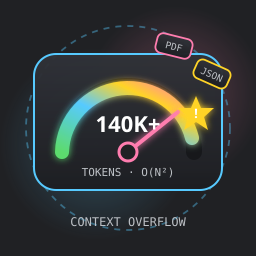
The context
window problem
Why long sessions slow down
and get expensive
Every turn replays the entire history
Quadratic token cost
Turn N resends turns 1…N−1. A 50-turn chat sends ~1,275× a single turn of input tokens.
Rising latency (TTFT)
Bigger prompts mean longer prefill time before the model streams its very first token.
Context rot
Old tangents and raw JSON tool dumps dilute attention, causing missed instructions and drift.
Binary bloat
Dropping PDFs, images or CSVs into session.state explodes database rows and prompts.
ADK
Gemini
What actually fills your prompt by Turn 25
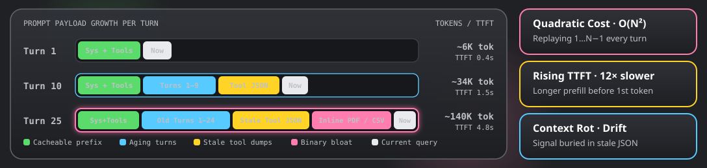
Freeze the green prefix so Gemini never re-reads it at full price.
Fold old turns & stale tool dumps into a tight summary event.
Move PDFs, images & CSVs into versioned Artifacts loaded on demand.
 Google Cloud
Google Cloud
Four data tiers in an ADK agent
| Tier | Scope & Lifetime | Best for | Sent to LLM? |
|---|---|---|---|
| Context Window | Single model call (working memory) | Active instructions, recent turns, current tool results | Every LLM call |
| Session State | Key/value dict (temp:, session, user:, app:) | Flags, user prefs, IDs, small structured JSON | When templated / read |
| Artifacts | Versioned binary blobs (Memory or GCS) | PDFs, images, audio, charts, large CSVs | On demand only |
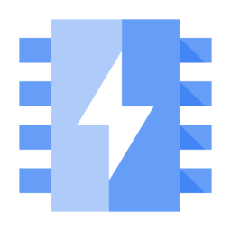 Memory Service | Cross-session searchable store | Long-term user facts, past session recall | Via search tool |
Treat context as a compiled view, not a raw log
Raw Sources
Session events, state keys, versioned artifacts
ADK Pipeline
Compact old turns · Cache prefix · Load artifacts
Focused Request
Clean, high-signal LlmRequest to Gemini
Keep full event history for audit, debugging and replay.
Compile only what the model needs for this exact turn.
Configure on App and Runner without tangling agent code.
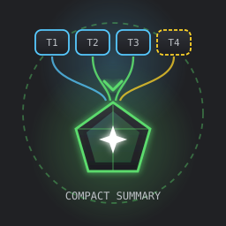
Context
compaction
Summarize older turns while
keeping recent ones sharp
ADK
Gemini Flash
Compress old turns, keep recent turns verbatim
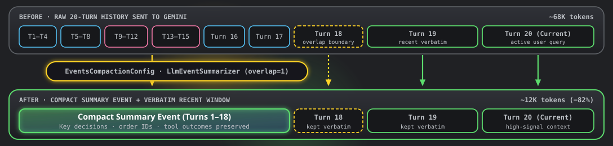
Folds Turns 1–18 into one dense summary of facts & decisions.
Keeps boundary turn verbatim so follow-ups never lose context.
Sharp recent history sent to Gemini at a fraction of the cost.
Two ways to trigger compaction
Turn-based (Sliding Window)
Triggers every N completed user invocations.
Token-based Threshold
Triggers when prompt tokens cross a budget.
 Python
ADK
Gemini 2.5 Flash
Python
ADK
Gemini 2.5 Flash
Enable compaction on your App
from google.adk.apps.app import App, EventsCompactionConfig
from google.adk.apps.llm_event_summarizer import (
LlmEventSummarizer,
)
from google.adk.models import Gemini
app = App(
name="support_app",
root_agent=root_agent,
events_compaction_config=EventsCompactionConfig(
compaction_interval=5, # compact every 5 turns
overlap_size=1, # keep 1-turn overlap
summarizer=LlmEventSummarizer(
llm=Gemini(model="gemini-2.5-flash"),
),
),
)
Configured on App
Wraproot_agent in App(...) and pass app=app to Runner.Use a fast summarizer
Pair a Pro main agent withgemini-2.5-flash for cheap, fast summaries.Custom prompt
Passprompt_template to preserve IDs, prices or key decisions.Compaction runs off the critical path
Summarization happens after the turn finishes, so Turn 5 latency stays flat.
On Turn 6, ADK skips the raw range covered by the summary and feeds the compact event.
Tune interval and overlap to fit your workload
| Workload | Interval | Overlap | Why |
|---|---|---|---|
| Customer support | 5–8 turns | 1 turn | Steady Q&A; 1-turn overlap keeps pronoun references intact. |
| Research / analysis | 4–6 turns | 2 turns | Multi-step reasoning needs more recent detail before folding. |
| Heavy tool agent | Token limit | Last 4–6 ev | Large JSON results can fill the window in just 2 turns. |
Over-summarizing burns extra Flash calls and causes "telephone game" drift.
Hard cuts break follow-ups like "now do the same for the second item".
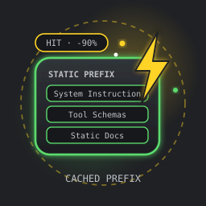
Context
caching
Reuse static instructions, tools
and docs across turns
Gemini
 Vertex AI
Vertex AI
Freeze the static prefix, stream only what changes
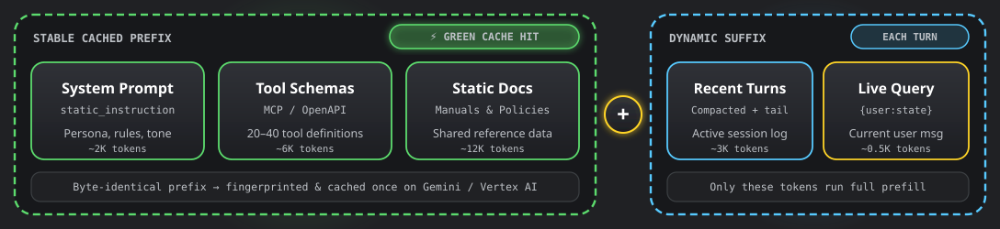
20–40 MCP or OpenAPI tools easily exceed 4K–10K tokens on every call.
Attach a 30-page handbook once and query it cheaply across turns.
ADK fingerprints the prefix and manages Gemini cache lifecycle for you.
Python
ADK
Gemini
Enable caching with ContextCacheConfig
from google.adk.apps.app import App
from google.adk.agents.context_cache_config import (
ContextCacheConfig,
)
app = App(
name="docs_assistant",
root_agent=root_agent,
context_cache_config=ContextCacheConfig(
min_tokens=2048, # skip tiny prompts
ttl_seconds=600, # 10-minute cache lifetime
cache_intervals=10, # max turns before refresh
),
)
min_tokens
Only creates a cache once the prefix is large enough to beat cache storage overhead.ttl_seconds
How long Gemini keeps the cached prefix alive. Match your typical session length.cache_intervals
Caps how many invocations reuse one cache before ADK refreshes it.events_compaction_config and context_cache_config on the same App.Gemini
Vertex AI
Impact on a 10-turn session with a 20K prefix
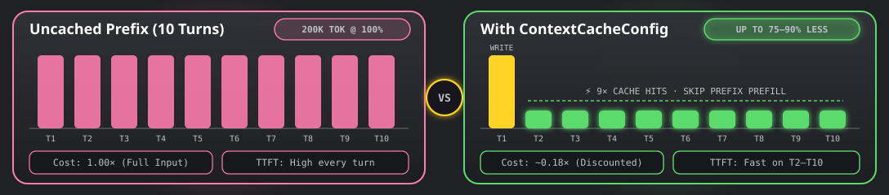
Every single turn re-sends and re-prefills the entire 20K static prefix.
Up to 75–90% lower input cost and dramatically faster TTFT on Turns 2–10.
Keep the prefix byte-identical to get cache hits
- ✓Use
static_instructiononLlmAgentfor unchanging persona, rules and policies. - ✓Put dynamic state at the end — keep
{user:name}or live context in the dynamic section. - ✓Verify cache hits by logging
usage_metadata.cached_content_token_countinafter_model.
- !Never inject timestamps or UUIDs into the system instruction — one changed byte busts the cache.
- !Keep tool order deterministic. Shuffling tool lists between turns invalidates the prefix.
- !Don't set huge TTLs blindly. Cache storage is billed per hour; size TTL to real session idle time.
cached_content_token_count in production.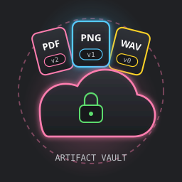
Artifacts
management
Store versioned files
outside session state
Cloud Storage
ADK
Gemini
Binary files never belong in session.state
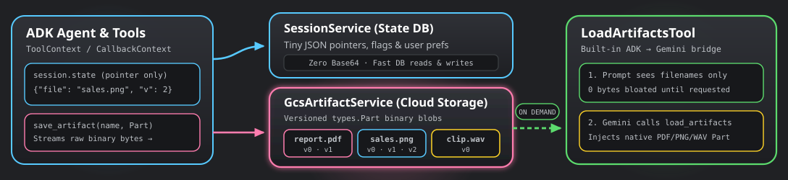
Base64 inflates size +33%, bloats DB rows, and lacks versioning or MIME metadata.
Native types.Part binary + MIME type, auto-versioned (v0, v1…), zero prompt bloat.
filename, version). Artifacts hold the bytes.Google Cloud
Swap storage backends without touching agent code
InMemoryArtifactService
Stores versioned blobs in Python RAM. Zero setup, instant reads, cleared on restart. Ideal for local dev & unit tests.
GcsArtifactService
Persists objects in a Google Cloud Storage bucket. Survives restarts, scales across Cloud Run & Agent Engine replicas.
from google.adk.artifacts import GcsArtifactService
from google.adk.runners import Runner
runner = Runner(
app=app,
session_service=session_service,
artifact_service=GcsArtifactService(bucket_name="my-agent-artifacts"),
)
Save and load versioned types.Part blobs
from google.genai import types
from google.adk.tools import ToolContext
async def save_chart(png_bytes: bytes, tool_context: ToolContext):
part = types.Part.from_bytes(
data=png_bytes, mime_type="image/png"
)
version = await tool_context.save_artifact(
filename="sales_chart.png", artifact=part
)
return {"file": "sales_chart.png", "version": version}
async def read_chart(tool_context: ToolContext):
part = await tool_context.load_artifact("sales_chart.png")
return {"bytes": len(part.inline_data.data)}
Async methods
Alwaysawait save_artifact(), load_artifact() and list_artifacts().Auto-versioned
Every save returns the new version (0, 1, 2…). Pass version=0 to pin an older copy.Tools & callbacks
Available on bothToolContext and CallbackContext.GCS
LoadArtifactsTool
Gemini
Scope by filename, load on demand with LoadArtifactsTool
Session vs User scope
LoadArtifactsTool
Add tools=[load_artifacts] to your LlmAgent. ADK lists available filenames in the prompt and injects file bytes only when Gemini calls the tool.
- ✓Set accurate MIME types so Gemini reads PDFs, images & audio natively.
- ✓Add GCS lifecycle rules to auto-expire old temp artifacts and control storage cost.
- ✓Return metadata from tools (
filename,version), not raw bytes. - !Don't preload every file on every turn — let
LoadArtifactsToolfetch on demand.
Compact, Cache, Store
1 · Compact
Use EventsCompactionConfig to summarize old turns asynchronously while keeping recent turns verbatim.
2 · Cache
Use ContextCacheConfig with a stable prefix to slash input token cost and prefill latency.
3 · Store
Offload binary files to GcsArtifactService and let LoadArtifactsTool fetch them on demand.
root_agent in App(...) and turn on ContextCacheConfig + EventsCompactionConfig.Read more and try it
Context overview
adk.dev/context/Context compaction
adk.dev/context/compaction/Context caching
adk.dev/context/caching/Artifacts management
adk.dev/artifacts/Sessions & state
adk.dev/sessions/Deploy on Google Cloud
adk.dev/deploy/Thank you
Q & A
Punsiri Boonyakiat
Google Developer Expert in Cloud AI
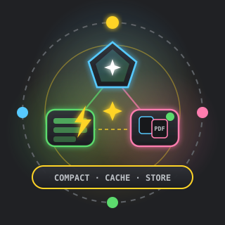